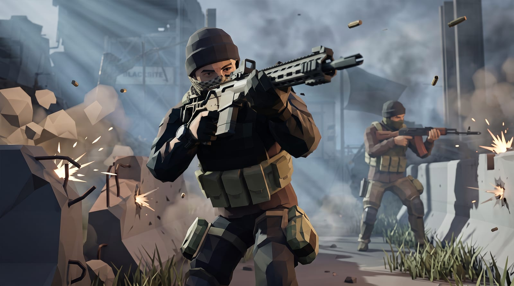
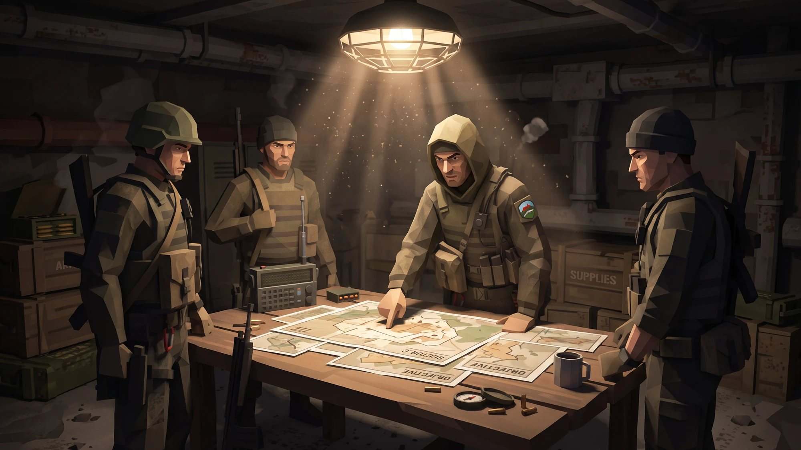
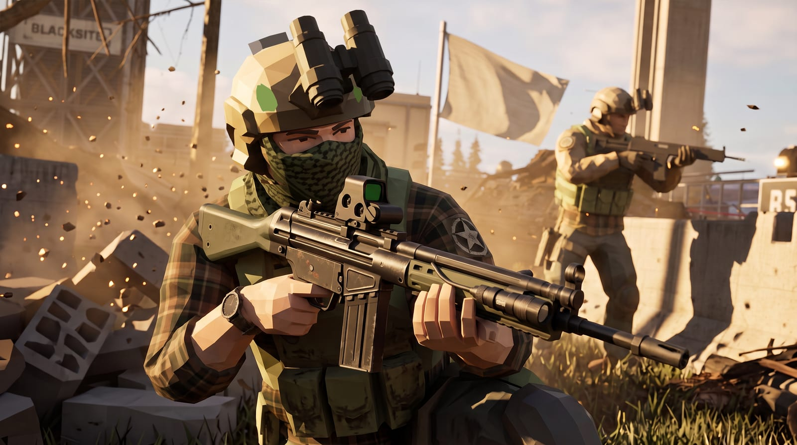
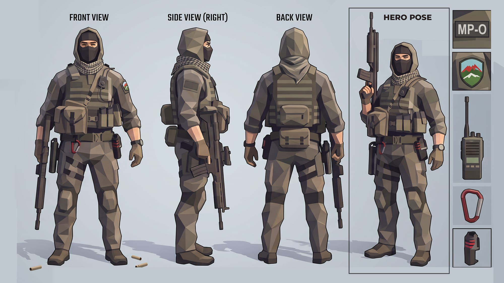
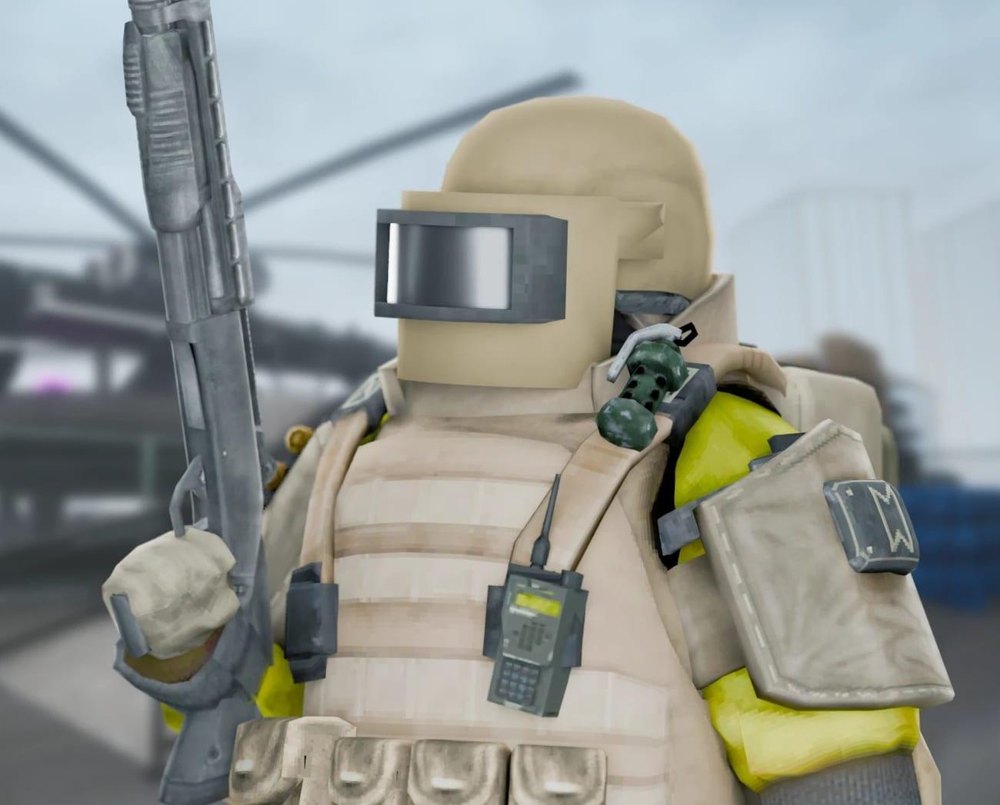
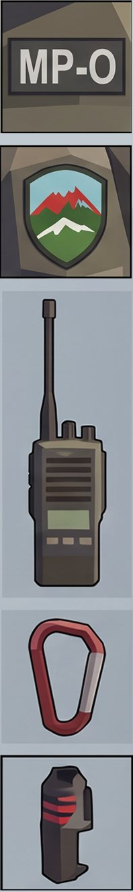
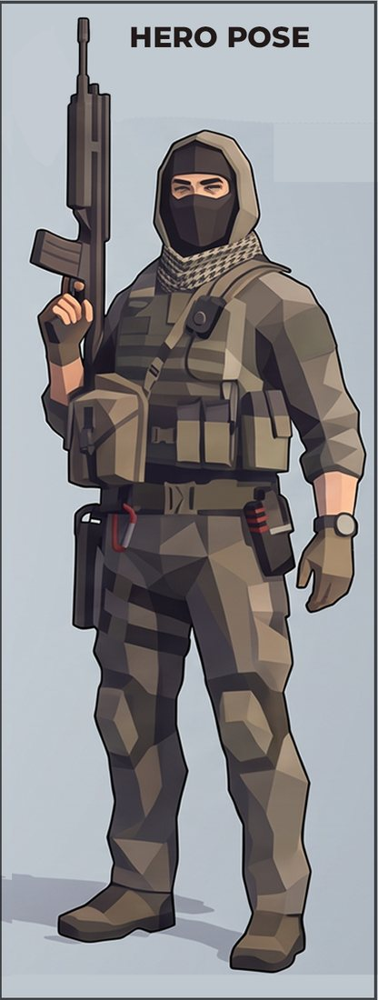
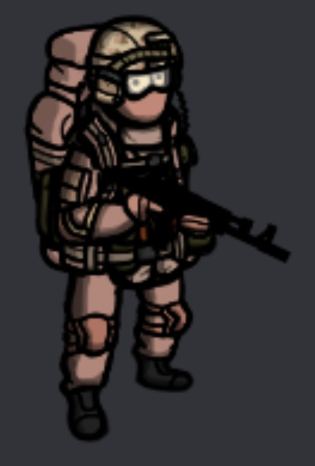

Escape from Tarkov meets Mount and Blade with guns
Inspired by the Antistasi mod for Arma 3. The basic idea is a PvE loop much like SP Tarkov. Instead of looting guns just for yourself, however, you play as a group of units and level up your characters and your Resistance through a Mount and Blade style overworld game. This makes gun and attachment collecting mean something at a gameplay level: stealing weapons lets you level up different characters and expand your Resistance.
The metagame then escalates from small engagements, ambushes and supply raids to all-out warfare with vehicles, as you finally drive the Invader off your island.
Visual target concept art:



3D art studies
Load a model to explore the half-track, StG44 and Recon operator. Drag to orbit and scroll or pinch to zoom.
A home worth defending
You are the Resistance. Five years ago, a foreign army invaded Yantis. The rebels are the righteous defenders of their home; the occupying army is the villain. The people, music and environments must make the player feel what has been stolen, what survives, and why the island is worth fighting for.
Build Yantis as a lived-in fictional island with a musical culture blending Southern Balkan, Mediterranean and Caucasus influences. Neighbours know the same songs. Families keep instruments, songs travel between villages, and fighters carry those memories into the hills. Warm stone courtyards, worn domestic spaces, shared meals, firelight and handmade objects should give the Resistance a recognisable home. Occupation intrudes on that world through checkpoints, floodlights, military equipment and intimidation.
The feeling of Yantis
A large part of expressing the culture of Yantis must be the feeling of Yantis as the “other” place. Rather than the typical post-Soviet scavenger feel, the player must feel that they are defending something unique, something special, something precious. The occupier, by contrast, represents exaggerated perversions of imperialist, capitalist and hawkish society.
This is the pure player fantasy of Project Partisan: to kill the invader, to drive him off your ancestral land. This is good, righteous, almost poetically justified. This makes the violence feel grounded and earned. Moments of rest, cultural encounters and lore touchpoints form natural gaps of rest as the player moves from combat to the tactical map and back to combat.
In Partisan, you are not a scavenger. You are not collecting battle pass items. Every bullet matters, every gun matters, every fighter matters. This is the unique hook we see as missing from extraction shooters on the market right now.
Typography
The Georgian, Greek and Mongolian writing systems.
Georgian posterGeorgian LS Elva displayGeorgian chalk alphabetGeorgian type familyWanlii Mongolian traditional fontMongolian writing forms
An analogue home, a technological empire
Yantis is a fictional setting inspired by a wide range of cultures across southern Europe and neighbouring regions, including the Mediterranean, the southern Balkans and the Caucasus. It should feel a little suspended in time: less technological, more analogue, and closer to nature. Old stone buildings, mountain villages, traditional textiles, wildflower meadows and everyday handmade objects make this a tangible home worth defending.
The larger idea is the contrast between the righteous Rebels and the evil Empire: the occupiers bring overwhelming technological superiority into a place rooted in land, tradition and community. That contrast must be visible in architecture, clothing, equipment, sound and daily life. It also strengthens the gameplay reward of looting: taking the Empire’s weapons and turning them against its soldiers is how an outmatched resistance begins to fight back.
Visual references supplied by Vincent: a weathered stone monastery beneath a vast snow-capped mountain; and a figure in red traditional clothing among poppies and wildflowers, with snowy peaks beyond. Draw on the relationship between people, old masonry, textiles and the natural landscape. These are mood references for Yantis, not a requirement to reproduce a real landmark.
The rebels · human and acoustic
Traditional folk music, with no synthesizers: folk guitar, plucked and bowed string instruments, voices and hand-played percussion. Use intimate playing, communal singing, mournful strings and defiant melodies. Music can express grief, fellowship and joy as well as determination. The sound belongs to the people of Yantis and the homes they defend.
The occupiers · digital and imposing
Modern electronic music with an overtly synthetic sound: heavy synths, processed bass, hard programmed beats and aggressive dubstep. Skrillex is a tentative reference for the weight and abrasive energy. Loud playback from military spaces should feel like the occupation imposing itself on the island. These are the fictional foreign invaders: cruel, threatening antagonists whom the player wants to drive out.
Music references
LADANIVA — Saraiman
Reference for communal musical energy and a vivid, inhabited folk world.
Partisan uses a native three.js low-poly art style, but its animation and sound are inspired by hardcore milsim. Gunfights are loud and chaotic.
Marketing ideas - This is Them, This is Us
Juxtapose battle pass AAA shooters with our janky shit - This is them, this is us
Art direction - moodboard
Faceted low poly with painterly facets, desaturated olive and coyote, and light that does the storytelling.





2D sprite ideas
Thick black outline around every shape: the figure reads against any ground, from any height.
Chunky, exaggerated gear (pack, helmet, kneepads): the role shows in the silhouette, the same rule as the 3-D operators.
Few flat tones per surface with a darker shade: it is close to the Art Style Lab's cel and ink looks, so we can test both before choosing.
A real rifle shape held across the body: the weapon family stays recognisable at small sizes.
Candidate look for the top-down shooter's rebels and soldiers.
What you can use today
Each dispatch is a demo. Status is honest: live means it runs on this site; prototype, demo or test means playable but partial; planned means a drawing and a packet.
Live
Weapon Modder
Eleven rifles, from the AK-74M and the SIG Spear to the StG 44, Bren and Chauchat. Real attachments that fit every rifle, a CNC kit for the old ones, rails that stop parts overlapping, handling stats that move as you swap, finishes, camo, wear.
Recon, Insurgent, Enforcer and the Base operator: modular kit, repainted zones, patches, three hero poses with hands on any rifle, in a warehouse with its crew and its sound. Every look is a link.
The missions, top-down: convoy ambush, compound assault, cave hideout defence. Play every rebel, give orders, use class abilities; bring loot home and promote your fighters with it.
The party screen: 44 classes from Village Infantry to elite machine gunners, marksmen and drone operators. Every promotion costs experience and the kit the new class carries.
The island, Bannerlord-style: provinces in their owners' colours, towns, the Invader's fort, your band on a hill, patrols and convoys on the roads. Not wired to the game yet.
A ruined-checkpoint diorama, and a visualiser for how a squad believes, doubts and breaks: belief and morale made visible.
Four pillars
Gear is identity
You are what you carry. Everything wearable or mountable is a slot with options, so a hundred loadouts come from a dozen parts.
Readable at a glance
Low-poly, faceted, flat-shaded. A silhouette must tell you who it is: hood, helmet and tubes, beanie, pack, rifle outline.
Smart because it speaks
Perceived intelligence comes from communication, not computation: the enemy's decisions must be audible and legible.
Fair, not cheap
Difficulty scales what the enemy knows and how fast it learns, never its health, damage or reflexes. Built for players who grew out of twitch.
Design note Pillars 3 and 4 come from the earlier AI design compendium and audience study, kept on the portfolio site at vincentdenil.com/docs/partisan-ai. Pillars 1 and 2 come from the demos and the moodboard.
Core loop, progression and features
Provisional Setting canon (WP-D1) is undecided, so fiction-dependent details below are placeholders. Mechanics follow the pillars and the AI compendium.
The campaign loop
March: your band moves on the island map while time runs. Invader convoys drive the roads; armies hunt you.
Strike: reach a convoy and ambush it; march on a town and assault it. If an army catches you, defend the hideout.
Fight: a short, loud mission where you play every rebel and the enemy acts on what it believes it knows.
Loot: bring home what you took. Weapons, plates, radios, drones.
Upgrade: promote fighters with the stolen kit, fit the guns in the Weapon Modder, and march on, stronger. The Invader answers with bigger hunters.
Design note The missions, loot and promotions run today inside Partisan Tactical and the Rebel Band; the map is a test. Joining them is the campaign roadmap. Trade is barter at friendly villages, never a shop at home; auto-resolve covers only lopsided fights; an overrun hideout is a setback, not a game over (decisions TAC-K-01 to K-04).
Progression
Progress is your band. Fighters earn experience and climb a class tree, and every promotion is paid for with the equipment the new class carries, so the gun you steal decides who you can become. Difficulty scales what the enemy knows and how fast it learns, never its health or aim (pillar 4). Numbers are provisional.
Enemies hold beliefs about the player (last seen, likely routes, noise heard), act on them, and say what they are doing. Difficulty changes belief quality and learning rate, never health or aim. Full reasoning and the audience study: AI design compendium.